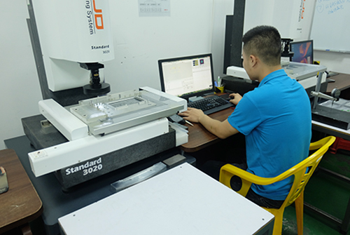
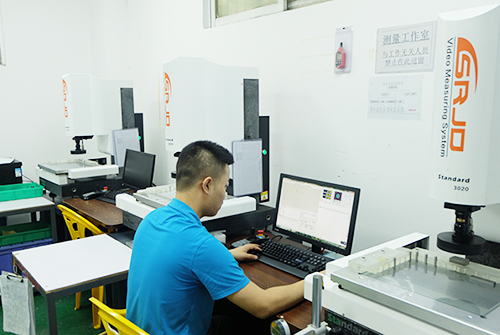

Quality & documentation
Inspection planning, reports, traceability and confidentiality.
Inspection methods
2.5D optical measurement
Dimensional, profile and hole-position measurement. Shown in legacy-site photographs.
CMM
For GD&T and complex features. Example — confirm availability
Shop-floor gages
Height gages, micrometers and calipers for in-process checks.
Visual and assembly checks
Prototype appearance, finish consistency and functional fit.

2.5D optical inspection
2.5D inspection equipmentQuality flow
Typical industry flow. The legacy site refers to eight quality-control standards. Verify before publishing
Tolerances and checkpoints
Material and certificates
Critical dimensions
Sample at planned frequency
Dimensions and appearance
Packing and documents
Documents available on request
Specify required documents in the RFQ to keep scope and pricing aligned. Verify
FAI report
First-article inspection of agreed or critical dimensions.
Dimensional report
Optical or CMM data for requested dimensions.
Material certificate
Material grade and lot documentation, where requested.
Certificate of conformity
Statement of conformity for the shipment.
Finish report
External anodizing or plating reports when requested.
Traceability & NDA
Illustrative — verify
- Link material grade, supplier lot and certificates when required.
- Link work orders, process route and inspection records to the part revision.
- Agree document retention and traceability depth before production.
NDA support is available. The legacy site states that drawings are limited to project personnel; confirm the formal process in the purchase agreement.